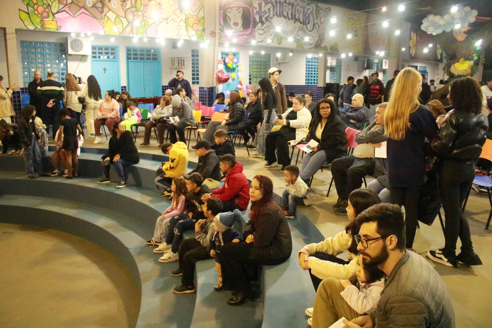

Sarau Literário Encanta a Comunidade Escolar
A comunidade escolar viveu uma noite inesquecível no Sarau Literário, que trouxe ao palco a magia dos Contos dos Irmãos Grimm em um espetáculo repleto de literatura, dança, canto e apresentações circenses
Ler mais